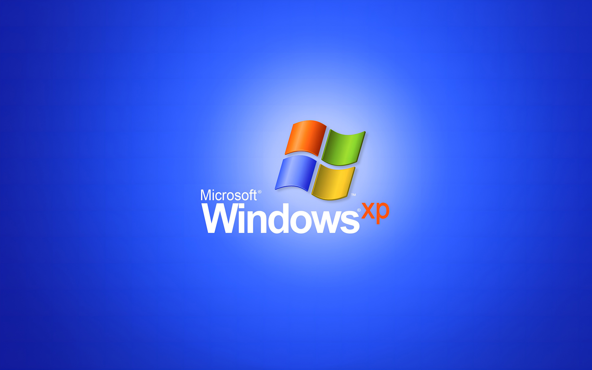

📼
怪东西收藏
- collection.htm
×
📼 怪东西收藏 📼 东西可能没用 📼 但看看又不花钱 📼
🏠 首页
|
🕹️ 小游戏
|
🧠 无聊测试
|
🗳️ 随便投票
|
📼 怪东西收藏
|
📝 废话生成器
|
👤 关于站长
|
🔗 友情链接
📦 没用的软件
🗂️ 桌面整理大师 0.1 —— 整理完更乱
⚡ 网速加速器 2002 —— 只加速焦虑
⏻ 自动关机助手 —— 一开机就关
🧹 内存清理大师 —— 清完内存更少
🖥️ 进入虚拟电脑试用
📦 分区二（预留，以后加内容）
📦 分区三（预留，以后加内容）
🖥️ 就绪
📶 连接速度：56Kbps
📼 怪东西收藏

💡 双击图标打开软件
🗂️
桌面整理大师
⚡
网速加速器
⏻
自动关机助手
🧹
内存清理大师
软件
正在运行...
0%
🪟
开始
00:00
🪟 旧时光电脑
🖥️ 我的电脑
📁 我的文档
🗑️ 回收站
⚙️ 运行...
⏻ 关机